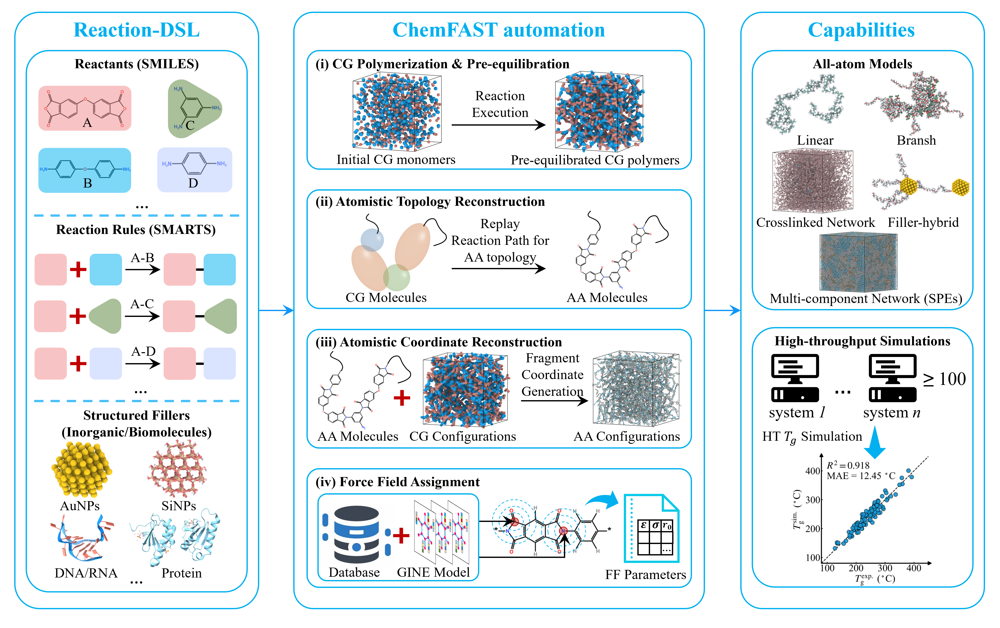

Workflow¶
Build a polymer model as you would describe its synthesis: choose the monomers and other components, specify how they can react, and let those reactions establish the polymer’s connectivity. ChemFAST mimics this construction process through reactive coarse-grained (CG) polymerization, then reconstructs the resulting all-atom (AA) system. You specify the ingredients and growth mechanism instead of drawing the complete polymer topology in advance; the construction protocol does not predict synthesis kinetics.

ChemFAST workflow and demonstrated capabilities. The four numbered stages in the middle panel are detailed below.¶
Stage |
Input and output |
What happens |
|---|---|---|
Reaction-DSL |
Molecular definitions and reaction settings → compiled CG reaction operators |
Defines reactants (monomers, fillers and other components), molecular SMILES, SMARTS reaction rules, reaction capacities, reaction types, intrinsic reaction probabilities and active-state transfer. Structured fillers additionally use reference coordinates and reactive-site mappings. |
(i) CG polymerization and pre-equilibration |
Compiled operators and simulation protocol → CG configuration + recorded, ordered |
Runs CG polymerization and configuration relaxation. Each accepted reaction updates connectivity and reaction state and is recorded in |
(ii) AA topology reconstruction — FG |
Molecular definitions + reaction rules + recorded, ordered |
Replays |
(iii) AA coordinate reconstruction — FG |
AA molecular topology + CG coordinates + any supplied reference structures → AA coordinates |
Places and orients atomistic fragments within the CG configuration and aligns structured components with their mapped CG sites. |
(iv) Force-field assignment — FF |
AA molecular topology and coordinates → force-field parameters and simulation files |
Assigns OPLS-AA parameters through template/database matching and ML prediction for unmatched chemical environments, then exports the parameterized system. |
The Quick start follows these same stages with runnable commands and output checks. For a browser-based alternative, see Online tools.
Reaction type controls polymer growth¶
The kind field selects how reactions are executed; the smarts field specifies
the chemical transformation.
generalreactions do not require an active site. Compatible functional groups can react while reaction capacity remains, supporting step polymerization such as polyimide formation.radicalreactions explicitly track active sites. The active state can be created during initiation, transferred as monomers join a growing chain, or removed during termination. Theactivationsettings specify these changes, supporting chain polymerization.
intrinsic_probability sets a prescribed reaction-acceptance factor used by the
CG protocol together with encounter criteria. It is not a predicted chemical
rate constant or equilibrium conversion. See the reaction fields
for the corresponding inputs.
Keep the recorded ReactionPath¶
Save the final CG configuration together with its ordered ReactionPath, which
records the accepted reaction rules and participating CG nodes. Replaying these
events preserves the sequence of chemical transformations used to build the model.
For an external CG configuration without this record, ChemFAST can use
breadth-first search (BFS) to traverse the final connectivity and assign compatible
reaction rules. However, connectivity alone does not reveal the order in which
functional groups reacted. Multiple sequences may produce the same CG connections,
and an inferred order can leave incompatible reaction-capacity assignments,
particularly in multifunctional, multistep or cross-linked systems. BFS may
therefore fail to reconstruct a compatible AA topology and cannot establish the
original chemical pathway. Use the recorded ReactionPath whenever available.
From AA topology to coordinates¶
Once replay has established which atoms are covalently connected, the CG configuration provides the spatial arrangement for their placement. ChemFAST generates conformers for flexible molecular fragments, moves them to their CG positions, and optimizes their orientations to reduce geometric mismatch across interfragment bonds. For large systems, it performs this optimization in spatial chunks and then resolves connections across chunk boundaries. Structured fillers instead retain their supplied internal geometry and are rigidly aligned with their mapped CG sites; their covalent attachments are already defined by the replayed reactions.
Scope of HSP-based CG interactions¶
For multi-atom reactants, predicted Hansen solubility parameters (HSPs) provide approximate relative non-bonded interaction strengths for flexible organic CG components. This helps generate and pre-equilibrate configurations for AA reconstruction, but does not constitute a general quantitative CG force field. CG morphology and relaxation depend on this approximation and the construction protocol. Interactions involving monatomic ions and structured inorganic or biological components require separate choices; the demonstrated CG examples use empirical assignments. Monatomic beads instead use an elemental vdW-diameter default and the median of the normalized multi-atom epsilon values; TFSI⁻ remains in the multi-atom normalization. See the non-bonded input reference. After reconstruction, perform AA relaxation and equilibration with a force field appropriate to the target system before interpreting material properties.